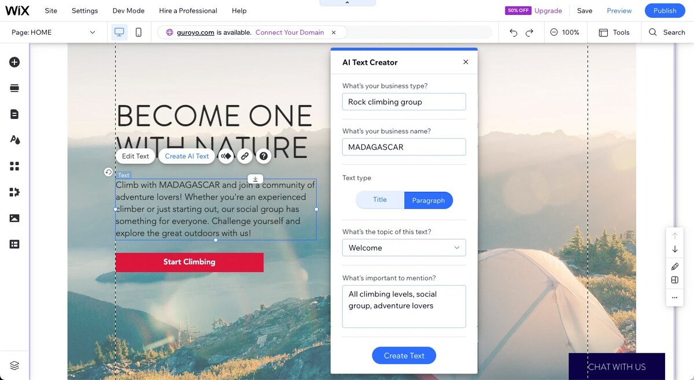
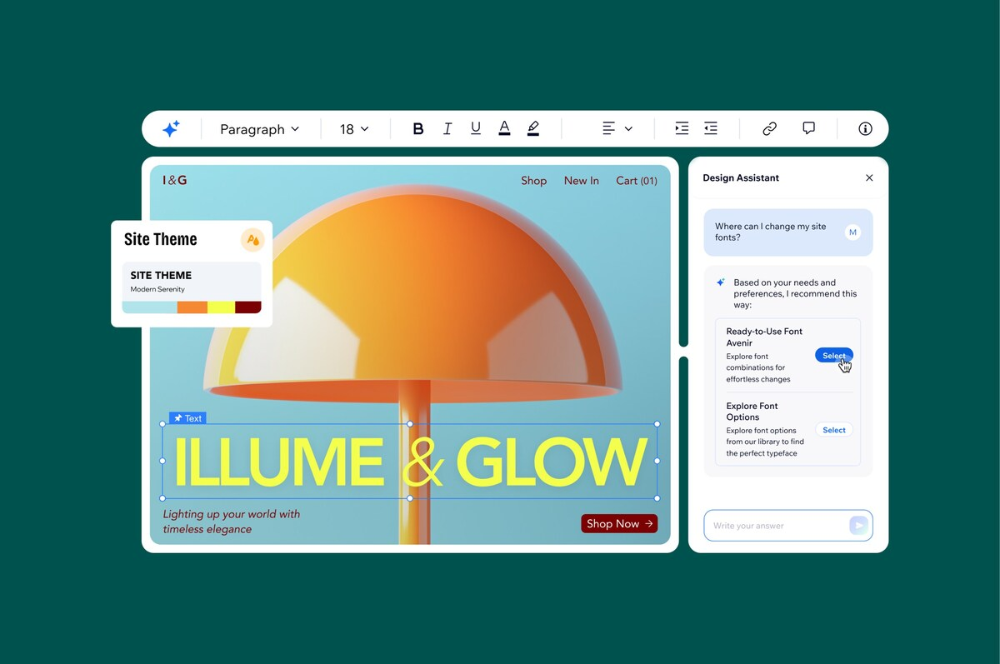

June 14, 2022
AI Text Creator in Wix Editor
Wix announced an AI text creator integration in the Wix Editor, using OpenAI. In the release, Oded Nachshon is quoted as Head of Wix Editor.
Public Profile Snapshot
Product leadership profile assembled from verified public releases. In Wix press announcements (June 2022, September 2023, and September 2024), Oded Nachshon is presented as leading the Wix Editor direction.
View TimelineJune 14, 2022
Wix announced an AI text creator integration in the Wix Editor, using OpenAI. In the release, Oded Nachshon is quoted as Head of Wix Editor.
September 20, 2023
Wix announced an AI-based meta tag creator for faster SEO metadata generation, again featuring Oded Nachshon in the leadership context around the editor experience.

September 16, 2024
Wix introduced an AI Theme Assistant to support design consistency and customization. The announcement includes Oded Nachshon as Head of Wix Editor and Chairman of Wix Editor Platform and Wix Media.

Note: This is a sourced summary page, not an official Wix profile.